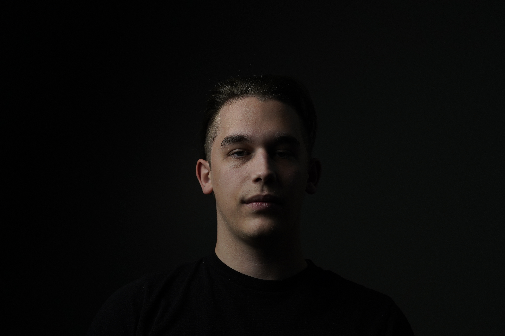

Aleksandar Sremcevic
I was born in Serbia in a small town called Topola. I lived in Serbia for 15 and a half years, struggling to find a passion, motivation, a career, and more.
My family started a business called “Igraonica Game House Topola,” where I worked and helped. My family fought hard to earn money for my sister’s and my future.
How it started:
My dad traveled to Canada and became a truck driver. He has been in Canada longer than me and the rest of my family, even missing the years of us growing up just to bring us a better life. After establishing visas for everyone, we headed off to Canada, Winnipeg, Manitoba!
The First Ever Canadian High School:
The first Canadian high school I attended was River East Collegiate in Winnipeg, where I met many amazing people and learned about Canadian culture and the education system, so different from Serbia.
Moving... Again:
After a few conversations, my dad found a townhouse in Calgary, Alberta. We packed up and drove there in one day, while my mom and sisters flew the next day to settle in.
High School in Calgary:
I spent the last two years of high school at Sir Winston Churchill High School, where I met many amazing people and learned from passionate teachers. It was there I met my amazing girlfriend, Amanda, who motivates and supports me every day.
Big Steps Ahead:
After graduating, I successfully got into SAIT's Design User Experience Major in September 2024. This was a huge step in my life and a hallway of opportunities opened up, helping me decide what I want to do with my future in Canada.